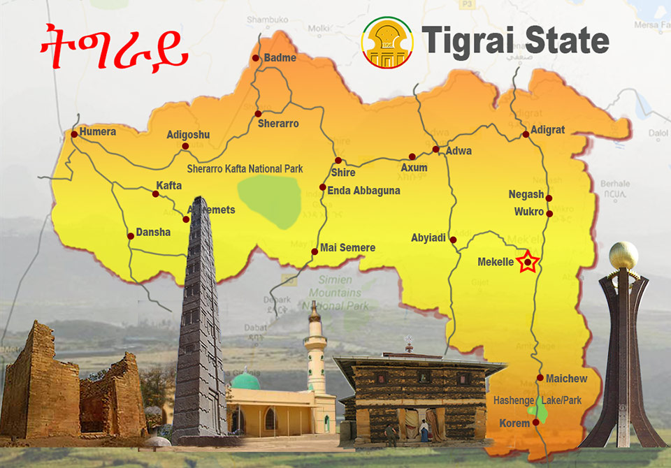

Tigray Region
The Tigray Region is the northernmost regional state in Ethiopia. The Tigray Region is the homeland of the Tigrayan, Irob, and Kunama people. Its capital and largest city is Mekelle. Tigray is the fifth-largest by area, the fifth-most populous, and the fifth-most densely populated of the 11 regional states.
Tigray is bordered by Eritrea to the north, Sudan to the west, the Amhara Region to the south and the Afar Region to the east and southeast. Towns in Tigray include: Mekelle, Adigrat, Axum, Shire, Humera, Adwa, Addi Remets, Alamata, Wukro, Maychew, Sheraro, Abiy Addi, Korem, Qwiha, Atsbi, Hawzen, Mekoni, Dansha, Adi Gudom, Sheraro, Indabaguna, Mai Tsebri, and Zalambessa.
Ashenda
Ashenda (Amharic: አሸንዳ) is a national festival celebrated by Tigrayian girls. Although Ashenda is celebrated primarily by teenage girls, females of all age group get to participate in this national festival, during this festival men are expected to be on their best behavior.
Prior to the celebration, groups of girls make preparations for the holiday by buying new clothes, visiting hairdressers, preparing drums and harvesting the distinctive 'Ashenda' grass (which will be tied around their waist for the celebration).